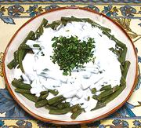

|
Green Beans with YogurtGeorgia - Mtsvani Lobios Borani | ||||
| Serves: Effort: Sched: DoAhead: |
5 side ** 1-1/4 hrs Prep |
Borani, simmered vegetables topped with yogurt, is a popular side dish in Georgia, and suitable as a side dish for almost any Western cuisine. | |||
|
1 6 1 1/2 1-1/2 ------ 1/4 2 1/3 1/2 ------ 1 1/4 4 ----- 1 |
# oz cl t oz --- t t t --- c c T --- T |
Green Beans (1) Onion Garlic Salt Herbs (2) -- Spices Cinnamon Cloves Peppercorns Salt ------ Yogurt Ice Water Butter (3) -- Garnish Mint, fresh |
This green bean version is often served with tabaka (flattened roast chicken). Recipes of this type are related to Persian Borani-e and Indian Boorani. PREP - (45 min)
|